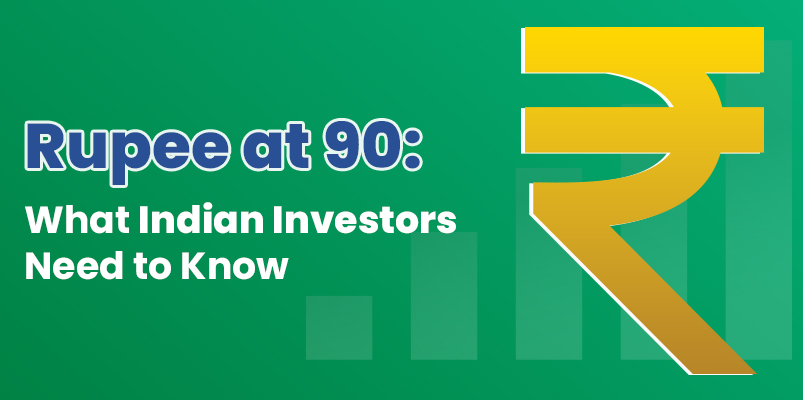

Rupee at 90: What Indian Investors Need to Know

The rupee reaching 90 against the dollar has grabbed attention in all markets. While the number stands out in headlines, currency fluctuations are a regular feature of global markets and are a regular factor in long-term investing. Most investors continue to create wealth through equity and mutual fund investments, driven by sound business fundamentals and long-term objectives.
Currency trends merely add one more layer of context in which investments are made, especially when investments are being made through the best trading platform in India that supports well-informed decisions across asset classes. When viewed this way, currency movements help investors be aware and ready, and still have confidence in their long-term investment plan.
What Pushed the Rupee to 90
Three main things are driving this change. First, the biggest pressure comes from global investors reallocating their funds. Even though the US Federal Reserve is finally cutting rates. When big foreign funds exit the Indian market, they have to sell their Rupees to acquire Dollars.
Second, India imports way more than it exports. We buy massive amounts of oil from abroad. Electronics, machinery, chemicals, and much more. All these imports need dollars. More demand for dollars means rupees get weaker.
Third, the dollar itself has been strong globally. It's not just rupees. Even euros and pounds have struggled against the dollar recently. So part of what we're seeing is dollar strength rather than rupee weakness alone. That's actually important to understand because it means India's economy isn't necessarily doing badly.
What This Actually Means for Your Money
Here's where it gets interesting. Different investments react differently to rupee changes. Knowing this helps you adjust smartly.
Businesses Earning in Foreign Currency See Higher Returns
Companies that earn the bulk of their revenue in dollars (or other strong foreign currencies) find that every dollar converts into more rupees. This conversion mechanism directly increases their reported rupee revenue and often boosts profit margins. This currency benefit can provide natural support to these businesses.
Companies with High Dollar Costs Face Margin Pressure
Conversely, businesses that rely heavily on imported materials, components, or fuel see an immediate jump in their operating costs. When their purchase bills rise significantly due to the rupee's weakness, it creates pressure on their margins and profitability.
Your Mutual Funds Show Mixed Results
Funds investing in international markets suddenly look better when you calculate returns in rupees. A gain in an international fund often looks even better once it is converted back to rupees because the weaker currency amplifies the return.
Gold Becomes More Expensive in Rupee Terms
Gold prices are influenced by global rates, and a weaker rupee increases the cost of buying gold in India. Even if international prices remain stable, currency movement can push domestic prices higher. This is why many investors consider gold a useful hedge during periods of currency fluctuation and market uncertainty, often using it to balance their overall portfolio.
What You Should Do Right Now
It is often observed that panic-selling based on short-term market movements is not ideal for long-term wealth creation. Understanding how different businesses react to currency shifts is key. For investors looking to make smart portfolio adjustments without difficulty, utilizing the best app for trading in India simplifies the process.
Market observers note that investment products focused on international assets offer diversification against domestic currency risk. This is due to the simple mechanism where a weaker rupee mathematically increases the notional rupee value of foreign returns upon conversion. Exploring international funds is therefore viewed as a strategy for investors looking to balance their portfolio against local currency movement.
Key Considerations for Investors
It is usually better to stay calm than to panic when currency fluctuates. Opening a free demat account with Integrated gives you a simple setup so your investments stay organised when markets turn volatile. Here are smart moves to consider right now:
Review Your Portfolio Mix
Take a look to see how much of your money is invested in businesses that deal in a lot of imports. Their cost generally increases when the currency weakens. Moving a small amount into companies that have natural advantages when the rupee weakens helps reduce the damage.
Explore International Funds
International mutual funds offer currency diversification. A weaker rupee boosts the rupee value of their returns. Having a small percentage of international funds is good for your portfolio diversification.
Use the Right Tools
Rebalancing becomes simpler when the platform is clear and easy to navigate. With the iInvest app, a well organised dashboard and quick access to your holdings help you track and adjust your investments with confidence, supporting consistent decision making over time.
Maintaining a Long-Term Perspective
The rupee reaching 90 naturally draws attention. But step back and look at the bigger picture. India's economy is continuously growing. Our forex reserves remain strong and corporate earnings are holding up well. These fundamentals matter more than day-to-day currency fluctuations.
The key to maintaining discipline is the SIP. Volatile periods often create the best buying opportunities. Companies stay strong while their stock prices dip temporarily. Investors who maintain discipline during such phases usually benefit most over time.
Conclusion
Understanding currency impacts helps you invest smarter. But don't overthink it either. Building a diversified portfolio matters more than predicting currency movements. If you are new to investing, volatile periods present a unique opportunity for practical learning. Experience beats theory every time.
The rupee movement to 90 is best viewed as data for analysis, rather than a cause for panic. Your success depends on discipline and sticking with your plan. Markets have handled currency swings before. They will again. What matters most is having a well-diversified portfolio and a trustworthy partner like Integrated to help you stay focused on long-term goals.
Disclaimer- The content provided in this blog is for informational and educational purposes only and should not be considered as financial advice. Investments in equities, mutual funds, or other financial products involve risks, and past performance is not indicative of future results.